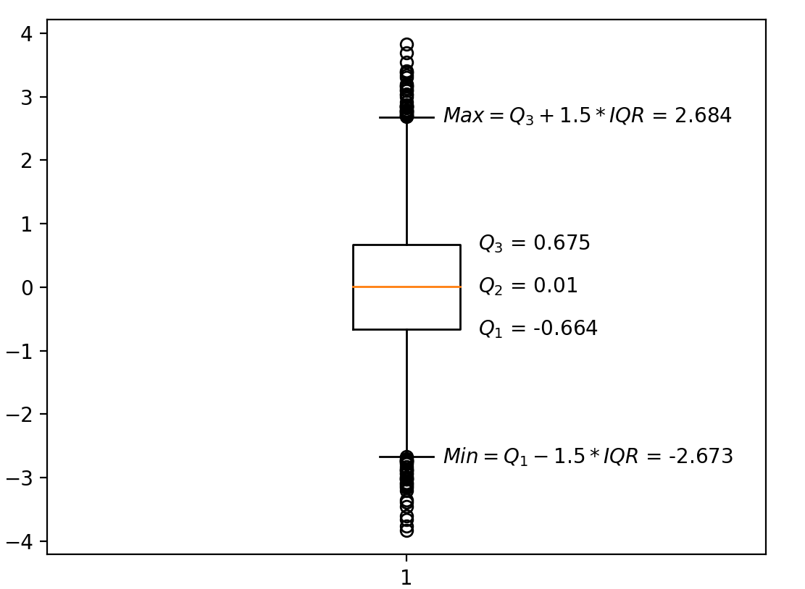

分位数与箱线图（Python）
分位数
维基上的简介：
- 分位数（英语：Quantile），亦称分位点，是指用分割点（cut point）将一个随机变量的概率分布范围分几个具有相同概率的连续区间。分割点的数量比划分出的区间少1，例如3个分割点能分出4个区间。
- 常用的有中位数（即二分位数）、四分位数（quartile）、十分位数（decile ）、百分位数等。q-quantile是指将有限值集分为q个接近相同尺寸的子集。
-
四分位数（英语：Quartile）是统计学中分位数的一种，即把所有数值由小到大排列并分成四等份，处于三个分割点位置的数值就是四分位数。
-
第一四分位数（），又称较小四分位数，等于该样本中所有数值由小到大排列后第25%的数字。
-
第二四分位数（），又称中位数，等于该样本中所有数值由小到大排列后第50%的数字。
-
第三四分位数（），又称较大四分位数，等于该样本中所有数值由小到大排列后第75%的数字。
第三四分位数与第一四分位数的差距又称四分位距（InterQuartile Range, IQR）。
-
-
百分位数（percentile）是统计学术语，若将一组数据从小到大排序，并计算相应的累计百分点，则某百分点所对应数据的值，就称为这百分点的百分位数，以表示第百分位数。百分位数是用来比较个体在群体中的相对地位量数。
分位数计算numpy.quantile、nmpy.percentile
numpy.quantile，nmpy.percentile都可用于计算四分位数和百分位数
注意：Numpy里的分位数计算为 ， 为数据个数，第一个数的位置为 ，第二个数的位置为 ，位置
若 不是整数，而是分数，则为临近两数的线性组合
示例分析
import numpy as np
score = [2710, 2755, 2850, 2880, 2880, 2890, 2920, 2940, 2950, 3050, 3130, 3325]
quantile10 = np.quantile(score, q=0.1, method='linear') # q取值范围[0, 1]
percentile10 = np.percentile(score, 10) # 取值范围[0,100]
quantile25 = np.quantile(score, q=0.25, method='linear')
quantile75 = np.quantile(score, q=0.75, method='linear')
print('10%-q:', quantile10) # 10%-q: 2764.5
print('10%-q:', percentile10) # 10%-q: 2764.5
print('25%-q:', quantile25) # 25%-q: 2872.5
print('75%-q:', quantile75) # 75%-q: 2975.0数据[2710, 2755, 2850, 2880, 2880, 2890, 2920, 2940, 2950, 3050, 3130, 3325]个数 ，
第一四分位数位置，第一个数的位置为 ，第二个数的位置为 ，
距离位置 的数 为 ，则线性组合的系数为 ，距离 的数 为 ，则线性组合的系数为（为什么这样反过来选取，简单理解，靠近距离近的数，权重是不是应该大一些）
10百分位数位置，
箱线图（箱须图）
在描述性统计中，箱形图是一种通过数字数据的四分位数以图形方式展示其位置性、扩散性和偏度组的方法。
-
：第一四分位数，也即第25百分位数
-
：第二四分位数，也即第50百分位数
-
：第三四分位数，也即第75百分位数
-
：四分位距
-
数据异常值（离群值：outliers）：大于和小于的值
-
上须（upper whisker）：
- 有大于的异常值：
- 无大于的异常值：为数据最大值
-
下须（lower whisker）：
- 有小于的异常值：
- 无小于的异常值：为数据最小值
绘制箱线图matplotlib.pyplot.boxplot
import numpy as np
import matplotlib.pyplot as plt
x = np.random.normal(loc=0, scale=1, size=(10000)) # 正态分布，均值0 方差1
plt.figure(dpi=200)
plt.boxplot(x)
Q1 = np.quantile(x, q=0.25)
Q2 = np.quantile(x, q=0.5)
Q3 = np.quantile(x, q=0.75)
IQR = Q3 - Q1
print(f'Q1 = {Q1}\nQ3 = {Q3}\nIQR = {IQR}')
min = Q1 - 1.5 * IQR
max = Q3 + 1.5 * IQR
print(f'min = {min}\nmax = {max}')
plt.text(1.05, min, f'$Min = Q_1 - 1.5 * IQR$ = {np.round(min, 3)}', verticalalignment='center')
plt.text(1.05, max, f'$Max = Q_3 + 1.5 * IQR$ = {np.round(max, 3)}', verticalalignment='center')
plt.text(1.1, Q1, f'$Q_1$ = {np.round(Q1, 3)}', verticalalignment='center')
plt.text(1.1, Q2, f'$Q_2$ = {np.round(Q2, 3)}', verticalalignment='center')
plt.text(1.1, Q3, f'$Q_3$ = {np.round(Q3, 3)}', verticalalignment='center')